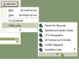
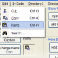
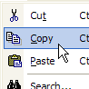
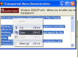
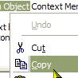
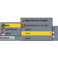
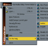
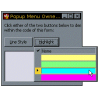
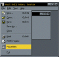
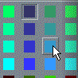

vbAccelerator Explorer Bar Control
vbAccelerator Explorer Bar Control
 vbAccelerator ListView Control
vbAccelerator ListView Control
 vbAccelerator Scroll Buttons Control
vbAccelerator Scroll Buttons Control
 vbAccelerator NeoCaption Component v2.0
vbAccelerator NeoCaption Component v2.0

Menus Index
|  | PopupMenu DLL - Create Unlimited Popup MenusThe PopupMenu (cNewMenu.dll) ActiveX DLL is allows you to create completely new popup menus with icons for your application. Menus created using this control either can be used as normal Windows Context menus or can be attached to a vbAccelerator CoolMenu and ToolBar control to be used as a form menu within a toolbar. PopupMenu supports all of the latest Menu UI features: showing and hiding infrequently used items, Office XP menu drawing styles, menus which stay open when you click them and much more. Last Updated: 23 April 2003 |
|  | IconMenu ControlThe IconMenu (cPopMenu.ocx) control is a really simple way to get icons into a VB project's menus. It also allows you to create arbitrary new submenus, gives you control over the system menu and has some useful new events indicating when menu items are highlighted and exited. Last Updated: 28 March 2003 |
|  | vbAccelerator IconMenu DLLThere are various controls for drawing menus with icons in at this site (and some code for doing the same sort of thing elsewhere). But so far these objects and code have been quite difficult to implement. This happens because these objects provide support for creating arbitrary menus at runtime - something VB has never been able to do. The downside to this extra functionality is that these menu controls must implement their own structures to hold the menu information. This object is introduced for one reason: to make it possible to add icons to any type of VB project with almost no coding at all - and at the same time to ensure 100% compatiblity with VB's menuing features, including the Visible and WindowList properties. Last Updated: 28 March 2003 |
|  | PopupMenu - Transparent Menu DemonstrationWindows 2000 and XP support all sorts of exciting new user interface effects, one of them being the ability to make Windows transparent. For more details, visit MSDN and search for the technical article "Layered Windows: A New Way to Use Translucency and Transparency Effects in Windows Applications." This sample demonstrates how to use the OwnerDraw facility of the vbAccelerator PopupMenu DLL to make your menus transparent too. Last Updated: 25 November 2002 |
|  | PopupMenu - Context Menu DemonstrationAll Windows controls provide a facility to show context menus when the user right clicks on the control through the WM_CONTEXTMENU message. VB doesn't provide a way to interact with this message however, so if you want to replace the default context menu on a TextBox, or to provide a custom context menu for other controls, then you need some extra code. This article demonstrates how to provide fully customised context menu support with icon menus. Last Updated: 25 November 2002 |
|  | Using Popup Menu ActiveX DLL to create SysTray Menus with IconsThis sample shows how to use the newly introduced ShowPopupAbsolute method of the PopupMenu ActiveX DLL to implement a icon menu in the SysTray. The code expands upon the "SysTray the Easy Way" sample. Essentially this project uses a VB form as a class which exposes an easy to use interface for adding your application to the system tray and responding to SysTray events. Last Updated: 21 March 2000 |
|  | Using the cNewMenu DLL to Create Start Menu/ICQ Style Pop-up MenusThe PopupMenu ActiveX DLL let's you create an unlimited number of cool-looking pop-up menus in your application, but what to do in the unlikely event that even that's not cool enough for you? The new version gives you this control too. The OwnerDraw property, which applies to each menu item allows you to intercept measuring and drawing events for the menu item, and to either add bits or completely take charge of drawing the items. This sample shows you how to add to the existing menu, in order to create a side bar up the left-hand edge of the menu to give a pop-up menu that Start Menu/ICQ look. Another sample (Owner Draw Pop-up Menus) shows you how to take complete control of drawing the menu items to create a line-style and a highlight-colour picker. Last Updated: 13 February 1999 |
|  | Owner-Draw Pop-up MenusThis project provides sample code for creating completely owner-drawn pop-up menu items using the PopupMenu ActiveX DLL. If you want to create a drop-down list of items from your control, and the number of items will fit onto the screen, then using this DLL to manage all the drop-down functions except drawing the items themselves can make the task easier. This project demonstrates two customised menu types:
Last Updated: 13 February 1999 |
|  | Adding menu icons to MDI projects with multiple child menusThis project demonstrates how to use the new NewMDIMenu event in the IconMenu control to provide iconised menus in MDI projects with child forms which have their own menus. Last Updated: 10 January 1999 |
|  | Using The IconMenu Control To Create a Colour PickerThis project demonstrates how to use the new Caption shortcuts in the Icon Menu control to create multiple column menus which don't have separators. By adding the hat character ("^") to the beginning of a menu caption, the Icon Menu control will start a new menu column without a separator line. (Use the pipe "|" character to create a break with a separator). Last Updated: 10 January 1999 |